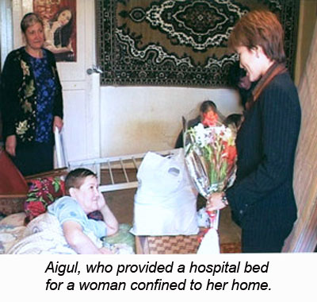
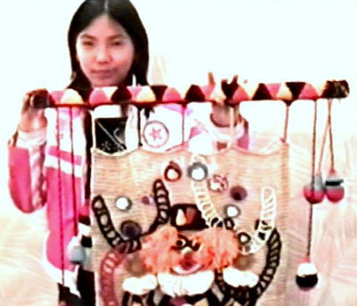

The Flow Funders' Stories
Aigul
I make my decisions both with my mind and heart...

I'm very proud to be part of the project Flow Kazakhstan...the good intentions of people can be realized with the financial support of The Flow Fund.
[As a Flow Funder], I was most surprised by the reaction of people when receiving the money. It's hard for them to imagine that it's possible to realize their ideas that easily. They're so happy.
It was so challenging to make a decision whom to give money to. It seems like everybody around needs help and everybody has rights to it too. So, I make my decisions both with my mind and heart.
The Flow Fund helped me to organize and conduct sporting events that focused on developing self-confidence among people in wheelchairs. The Flow Fund also established a program that educated youth about the environment and, by means of a tree-planting project, offered something concrete that they could do to shape their natural world.
I am inspired by the light in the eyes of the participants. They want to do well and have projects for the good. That light helps their target group to not get lost in the darkness of greed, evil and violence. I met many interesting people including Gregory, a Peace Corps volunteer, who heleds me with our project with great pleasure. There are more and more of such people.
In the words of the chairperson of the Invalids Union, Shashutdin Kdyrgaliyev:
"I want to share with everyone what you did for us and I will not stop talking about it because you can't be silent about good deeds."
Angie
I'm most interested in what seed could be planted and how it will grow over time...
This process has made me very happy. It's been a series of lessons in discernment and in placement. My job is to discern what the need is and what the impact could be over the long term. I'm most interested in what seed could be planted and how it will grow over time.
This experience also inspired me to think about social responsibility and philanthropy. If more people could join in a spirit of generosity, what a powerful impact we could have. In fact, there's not a culture in the world that doesn't give gifts. Giving gifts is a ritual we use to extend feelings of love, charity, and generosity. That's why l think the Flow Fund Circle is such an innovative and creative vision for philanthropy.
I also found some wonderful synchronicities in this work. My gift to a South African project that preserves the culture of Eastern Cape indigenous peoples linked me to projects in Peru and in New Zealand. It just took planting that first seed.
Anja and Alejandro
How hard can it be to give away money?
Acting as a Flow Funder was illuminating and rewarding, as well as taxing. How hard can it be to give away money? Pretty hard, we discovered. Finding worthy candidates was not easy. Many candidates were without office, phone, email or website, and it therefore took time to find them. Getting the candidates to submit the right information at the right time was another battle. However, we are glad to have had this opportunity. It was wonderful to be in a position to help other people do good work, and in the process we got to know some very interesting people and worthwhile projects that we might not have happened upon otherwise.
Our aim and approach
Our preference from the start was to support groups and individuals whose work was in keeping with our own objectives. During our time as Flow Funders, we worked through the Group on Ecology & Traditional Agriculture (GUETA) a Non-Governmental Organization (NGO), whose aim is to strengthen local communities, cultural and biological diversity in Mexico.
Through the Flow Fund we supported a variety of causes, people and communities. We started by arranging meetings with relevant NGOs that we thought might be able to suggest worthy candidates. This approach gave us some good leads to start with, while others surfaced as a chain-reaction in response to our inquiries. We tried to pick projects that helped to counter the advance of the global consumer culture, and to empower local communities. Thus we offered financial help to strengthen local food production and security, to help maintain cultural diversity and strengthen indigenous languages and customs en vivo, to halter the exploitation of the environment, and to conserve biological diversity.
We made a great effort to select projects where the money would really make a difference and go a long way. Almost all the projects we choose to support had no or limited funding from elsewhere, and relied upon voluntary efforts.
The Projects
During a three year period we supported 19 different initiatives in the states of Oaxaca, Puebla, Veracruz and the Federal District in Mexico. We supported: the construction of an environmental community center run by a group of young Zapotecs;, an integrated organic community farm in the Chimalapas;, the first local radio station in Huave language;, a rural community school focused on teaching children the skills required to build a sustainable and dignified life in their own rural communities; a community forum to halt the construction of a massive commercial shrimp farm and the subsequent destruction of a fragile mangrove ecosystem and the displacement of local fishermen; and a workshop to start a network of organic seed producers.
By supporting these and other initiatives we sought to strengthen the growing movement of people that are working to reverse the shift of power from nation states to faceless corporations, and help put the power back in the hands of local people.
Rewarding moments
Giving away money was never easy for us, but it did become less difficult with time, as we got to know more people and project, and got better at assessing the quality and viability of a given project. There were many rewarding highlights. Take the community "La Cristalina" in the Chimalapas, in Mexico. For the first time, its inhabitants were able to get support for one of their own projects — a community farm. For years, the Chimalapan communities had effectively been cheated by a number of large NGOs that have been fundraising in their name without considering their needs.
There were also bittersweet victories: the initiative to stop the shrimp farm did work, but exposed corruption at its core: several innocent people were jailed for a long period of time as a result of their opposition!
Being able to help to enhance a project was a reward in itself. For example, in response to our suggestion, the group of young Zapotecs who we supported to construct an environmental center of adobe, decided to take this opportunity to train local youngsters in the traditional building techniques at the same time.
Some of the initiatives we helped just wouldn't have taken place without the money from the Flow Fund, as was the case of the Homegarden and Medicinal Plant Project in Alvaro Obregon. Likewise, with the rural-based training centre that offers a Master's Degree in Living Ecology to indigenous youth for community development, which meant that several students were able to continue their education rather than being forced to leave for lack of financial support. Equally important was our support for the Organic Seed-Saving Course, organized by La Canasta de Semillas, which would most likely been postponed indefinitely.
So would we do it again?
Probably yes for all the reasons mentioned, despite the hard work. It takes money to give away money. You need a job that leaves a good bit of extra time, and an income that covers the expenses involved. Also, for the program to be truly effective, there needs to be a follow-up of the projects. We would have liked to have traveled to all the sites, and to have gone there more than once, to have spent more time with the project-partners, and to make sure that the money was well-spent in each case. In most cases we know that this is so, and in others we hope this to be true. We have come to believe that while careful planning and selection are important, follow-up is the key to a successful project.
Balzhan
The Flow Fund supported impoverished women by providing textbooks and clothes that are needed to be able to attend school and complete a high school education...
Low standards of living exist in northern parts of Kazakhstan and children cannot be sent to school because families lack the necessary financial resources. I, in cooperation with Non-Governmental Organizations (NGO's) from Astana, learned about the work of initiative groups in two villages which are populated by mothers with many children. I was shocked by the low-living standards of women in this region. There are no jobs for women and mothers cannot leave their families to start businesses. The children are not able to attend school. I met with women from three initiative groups and the Flow Fund supported these women by providing textbooks and clothes that are needed to be able to attend school and complete a high school education. These items will be handed on to other family members.
Bayan
People expressed feelings of optimism for the future as they started to believe that they had the skills necessary to have their voices heard and achieve justice for themselves...
I was most surprised by my inner state when I saw how people suddenly change. It's been a long time since I've seen tears of joy - when people are crying because something extraordinary happened to them and they're so overwhelmed. Inside I felt heavy and light at the same time. I couldn't explain what was happening with me and that really surprised me. I felt nervous, agitated, alarmed, but also lots of happiness. There was so much emotion when I met with the women I funded. One of them had tears is her eyes the whole time. She was too shy to cry, but tears just kept coming. She's a single mother with four children. I was so happy that I could do something to help them, but so sad for their sufferings. All the women we gave money to are single mothers with several children.
I had several challenges and inner doubts. Did I make right decision? Will what I'm doing for them really help people? I was also nervous. How many people will benefit from this funding? Will what I'm doing do any good at all?
It was also hard to work with the strangers. Will they be successful? I needed to trust my instincts and my heart. Even if it seemed that people I selected are nice and everything is going well, there is still a worry about the outcome. Losing the money is not the biggest worry - it's that this might be their only chance to overcome poverty. It's a chance to change their lives and fight for themselves and for their children and win a little bit of happiness. I want them all to succeed. It's hard to even imagine that something might go wrong with these women.
Another project that meant a lot to me was our work with people in the Nevskoe region who have lived with a sense of hopelessness since the privatization process began at the end of Soviet rule. Land that in fact belonged to the people was either sold to private parties for personal gain by the Director of Collective Farms or given to people with the requirement that the land had to be used to remain in their ownership. Since many lacked financial resources to work the land, new owners were forced to give this land to third parties. The privatization process was deeply flawed.
The focus of my project was to seek justice through the courts. With financial support from the Flow Fund, lawyers were hired, financial officers were alerted, countless photocopies were made, people were transported to hearings and 22 families won their cases. This success story attracted nationwide attention and has empowered the families in the Nevskoe region in their search for justice and fairness. People expressed feelings of optimism for the future as they started to believe that they had the skills necessary to have their voices heard and achieve justice for themselves.
Beth Ames Swartz
The Flow Fund's support allowed me to dream bigger dream and, to make dreams reality...
The Jewish tradition of doing mitzvah (good deeds) shaped my Flow Fund experience. Participating did not change the way I saw the world - it allowed me to dream bigger dream and to make dream,s reality. As an artist, I am fascinated with the interaction of art and healing. The Flow Fund served as a real world example of this interaction: energy latent in money being released through artand creating healing within individuals and among groups of people.
The Sacred Souls Award Project found enlightened people who spent their entire lives being compassionate to others. These Sacred Souls were recognized and revered in their own countries for their good deeds. Winners of the Sacred Souls Award included people who could be classified as educators, environmental activists or social activists - their common ground being accomplishments that really are miraculous. The project celebrated the work of these souls. For me, the key is that one person can make a difference, can change the world. My belief is a continuing theme in my visual art. Every life has purpose. Every life has meaning. Every pebble makes many waves in the water.
David
I remember how delighted I was when one of my first grantees accepted a Nobel Prize many years later...
The Gift Must Always Move
Over a decade ago I was one of the first Flow Funders. As the President of a non-profit organization and therefore, someone who has always been on the other end of the philanthropic transaction, this was a transformative experience for me. Besides the sheer joy of helping some truly remarkable people fulfill their dreams, I was able to gain an insight into the considerations and perspectives of the donor. I recognized that the gift moves in two directions. Although I was passing on a gift to a deserving recipient, I was also receiving a gift in turn. And, I repeat, it was not only the fun of seeing their faces light up (a feeling I know so well) but realizing that they were doing me a favor, too. I was investing something in them - money and trust. The payoff for this investment was their good work in the world. Their lifework was my reward. I remember how delighted I was when one of my first grantees accepted a Nobel Prize many years later.
There was a wonderful article in Co-Evolution Quarterly many years back called "The Gift Must Always Move," which explained the ethos of various Northwest Native American ceremonies. When you get a gift you have the obligation to keep it moving. This is the responsibility that comes with acquiring great wealth. If you hold it for yourself, it will be a great burden. But if you keep it moving, you participate in a circle of love that shares the blessing of our good fortune. There is magic that occurs when we stop being greedy and open our hearts to share in the bounty of life. We should always beware of reifying either love or wealth of any kind. We only receive its benefits when we keep the gift moving.
Demetken
The children were so involved and proud of their knitting and it was so sad to hear that they had to destroy the things they knitted in order to reuse the yarn...

I wanted to find special opportunities to assist children and to help in the resettlement of the Oralman. Oralman translates loosely to "returnee," and is an official term used by Kazakhstani authorities to describe ethnic Kazakhs who have immigrated to Kazakhstan since its independence in 1991. Oralman usually come from the neighboring countries of China, Mongolia, Uzbekistan, Russia, Kyrgyzstan and also from countries with notable Kazakh minorities: Iran, Afghanistan, and Pakistan. I contacted Karligash, a group that supports Oralman who have recently come back to Kazakhstan and often face discrimination. Oralman usually don't have proper documents or knowledge of local laws, and they are sometimes illiterate. Karligash works to help these people and, after hearing of their situation, I wanted to help as well. Needless to say they were absolutely shocked with the turn of events. "This is such a blessing, it's money we never even dreamed about," said the director, Maira Kalisaeva.
I read in the newspaper about the Knitting Club at school #13 and decided to visit the school and see this club. I was astonished by what I saw. It was like a fairyland. The children were so involved and proud of their knitting and it was so sad to hear that they had to destroy the things they knitted in order to reuse the yarn. Lyubov Raupova who organized this club is so happy The Flow Fund found them and grateful for The Flow Fund's help. Lyubov is an engineer but, after Perestroika, her hobby of knitting became her profession. She has headed the knitting club for fifteen years with her sister Nadezhda. She has no regrets about changing careers because she believes "Everything that happens is for the best."
Zholdasbekova Gaunartas, the Head of the youth club Usharal, contacted me to find out more about participating in international exhibition markets. Zholdasbekova is a beautiful, energetic young woman who, at age 32, is a widow with four children. She rebuilt her life by establishing a Drama Circle at the village school. Children perform classics to folk tales and make their own costumes. This gives them the opportunity to acquire sewing skills. The Flow Fund has contributed important support to the Drama Circle. Zholdasbekova is interested in the social issues not only of her village but the whole region, and she often visits us to talk about them.
My philanthropy philosophy is: I am a source of giving to those who wish to change their lives and the lives of those around them in order to improve the quality of their lives.
Edmundo
When I thought of giving something, I would be overwhelmed by the questions, the analysis, the considerations about giving or not giving the money, and it paralyzed me...
When I was invited to be part of the Flow Fund and started the first year, I was very surprised to see my behavior when I received the funds. For four months, I could not give away a penny. Every situation when I thought of giving something, I would be overwhelmed by the questions, the analysis, the considerations about giving or not giving the money, and it paralyzed me. It was only when I took a week vacation in an island off the northwest coast of Brazil that one day I realized that Elena, the woman that was my waitress serving dinner in my posada, was the same woman who ran a small eating place at the beach four miles away that had served me lunch that same day. There she served the most delicious and sophisticated meal with very cold beer even though there was no electricity at the beech. Investigating more, I found out that everyday Elena, her husband and two children would carry ice blocks and beer on their back for four miles to serve the customers at this distant beach and make a living for herself, her family, and her many relatives.
That night when I went to bed the Flow Fund bell rang in my heart. I went for lunch again at her restaurant on the beach and while I was feasting on her food and drinking very cold beer, I asked Elena if a Mule would help her to carry her stuff every day. She smiled and said that it would help greatly and that "we used to have one that died and we can not afford to get another one". After I finished my meal I asked her if she knew of any mule for sale on the island. And she told me that further down on that same beach, a man was selling a young mule. I got the directions and bought the mule. I came back to the restaurant with the mule, tied the mule to a pole and told Elena that a group of people from far away had given this mule to her.
I walked back from the restaurant feeling my steps very light on the ground. It was a delightful uplifting feeling. I had done something that filled me with joy and the tears on the eyes of Elena, the shy smile of her husband, and the sight of her two boys jumping on the mule would not leave my mind. I realized that I had just been initiated as a Flow Funder. Inspired by a mule who kicked me out of my paralysis to make the funds flow.
Six months later I went back to the island to check how this family was doing. There were improvements to the restaurant and more relatives were employed there. With the spare time that the mule had given her, Elena had started to work with children in the village teaching them their African roots and traditions that were vanishing from the island. She taught groups of girls traditional African dance and taught boys African drumming, giving these children a deep sense of pride in themselves. It also gave them opportunity to present their work for visitors to the island instead of hanging around getting into trouble. The Flow Fund has supported Elena's work with the children for the past 3 years and this funding has resulted in a small but remarkable cultural revolution on this island. The children now travel to the mainland to present performances and they have an annual festival of traditions on the island.
Enid Schreibman and Fran Macy
It takes a great deal of time and thought to send money into poor communities. It has to been done very thoughtfully so that people do not feel hurt, angry, neglected or jealous...
We chose women we knew through trainings we had conducted, and we used our intuition to decide who would be appropriate to share Flow Funds with. Our intent was to create a trusting and loving circle. It developed far beyond our expectations.
We chose people who had some experience with money. We had given them grants before and they had managed them well. In a different culture, with different values, it was challenging to set guidelines for how the money would be distributed. We wanted to set those guidelines together. We knew they needed guidelines because it would make it easier for them to give money in their own communities where they had so many friends, relatives and neighbors. They laughed and worried and puzzled over who they could give money to and who they couldn't. They knew they shouldn't give it to family members, but they said, "Everyone is our relative — our roots are all connected." Eventually through a long process of discernment, they decided that they shouldn't give the money to anyone who would be invited to their wedding — even though that eliminated about 400 people!
We did a lot of training with our Flow Funders about how you discern projects that are sustainable. We built on the old adage: "If you give a man a fish, you feed him for a day. If you teach a man to fish, you feed him for a life time." So the Flow Funders developed the concept of a "fishing rod." They would fund projects that had the capacity to help a family or a project be sustained over time. The "tool" of sustainability, whether it was a goat or a sewing machine or an apartment for a community center, was called a "fishing rod."
Some women started by giving money to individuals, but found that if the individuals moved to another town they took the equipment, tools, or livestock with them. So they began giving to groups, who then owned the "fishing rod" which would stay in the community even if a key person moved away. In addition to economic start-up investments, they also gave to job training projects and to projects that would improve the life of the community, such as clean water or a community center. We gave them the money to give away, but we also organized meetings for them so that they could learn together. Fortunately, we've had grants to travel and do other work in their country, so we've been able to afford to meet twice a year with the Flow Funders.
We've really worked for multiplier effects and tried to use the Flow Fund money to leverage other funding. One Flow Fund Gift was shared for a child care center to provide after-school care.. This allowed mothers to work and contribute to their family's financial well-being and it sparked other donations from businesses and the government. The Flow Fund has also inspired one of the present Flow Funders to form an independent, transparent community foundation in honor of his wife, a founding Flow Funder who passed away.
In another situation, Flow Funds were used to leverage change and not just to meet an immediate need. One of our Flow Funders, Aigul, lives in an apartment building in an urban area. Like all apartment buildings, there was no access for wheelchairs, even though there is a legal ordinance to have disability access. Aigul used Flow Funds to build a ramp and then a group of people staged a demonstration on it, outing the government for not enforcing their own regulations for other apartment building to have ramps.
Working with 15 Flow Funders has taken more time than we expected. There were challenges of translation, and carrying and distributing money in communities that don't have banks. It takes a great deal of time and thought to send money into poor communities. It has to been done very thoughtfully so that people do not feel hurt, angry, neglected or jealous. We get so much back. We've become a family. We celebrate birthdays with them, cry over each other's troubles, and share joys. When one of our Flow Funders passed away, the group decided together that her husband should take over her Flow Funding.
Being Flow Funders gave us a chance to stretch ourselves and to affect the philanthropy situation in the former Soviet Republic in new ways. People were accustomed to being forced to donate money to government organizations. This was a new concept of a gift given with joy.
Fran: The most moving thing for me has been the experience of working with and coming to love a group of 15 people who have so strongly bonded with each other and with us. It feels like a truly collaborative project, not only between them, but between us and them. They are all proud to be members of the Flow Fund. It's been inspiring to see what good problem solvers they are, how they drew up the guidelines for us to work together, the way they share experiences good and bad. We get together twice a year, with a lot of email exchange in between. It was striking to see how the trust and mutual affection grew. People felt freer and freer to bring up problems.
Enid: A story that has touched me deeply is about Nilzia, a Flow Funder with a lot of administrative experience. She was one of the chief engineers in a factory, with a high level position in the women's committee. She was also elected to the local legislature. She a very graceful, smiling, charismatic woman with a huge heart. When Nilzia first got the Flow Fund money she didn't know what to do with it so she kept it under her pillow for the night.
Nilzia is so thoughtful, and always concerned about sustainability. She lived in a large village and took great interest in women in smaller villages who have so many children. She saw that one village had a stream that had dried up. Because of this, vineyards no longer produced and the village economy was stagnant. She researched pumps and went to another country to buy the best pump for that particular situation. When the water rushed into the village, all the people in the village took off their shoes, rushed in and started playing in the water.
I'm so happy that the women have picked such wonderful projects. The funding went to communities and projects that we would never know about. We wouldn't know how to evaluate the projects, but they know their culture and know how to evaluate where to give the money. I cry often with joy and because I feel so touched by their care and discernment and focus and commitment.
Fran
This was a lot of fun! When I saw things that needed doing, I could help get them done...
Being part of the Flow Fund gave me a lot of empathy for funders — and it taught me a good deal about how money works. Now, when people come to talk to me about projects in social change, I can use the skills I developed to help them. I can make phone calls others might, be intimidated to make. This was also a lot of fun! When I saw things that needed doing, I could help get them done. For example, two young men were becoming leaders in our campaign to clean up the Ganges River in India. They'd never been outside their country. I made arrangements for them to go to an environmental education program in Australia. They came back with new visions and new energy, and now they're helping to teach and support a second generation that's taking on that issue.
Gulmira
Everybody who received gifts from us is wishing us all the best in our noble mission...
I purchased a copy machine for the Diabetes Society in Kazakhstan. With this machine it is possible to duplicate printed informational leaflets about diabetes for the villagers in the hopes of prevention and amelioration of the disease. I also purchased air conditioning and heating appliances for bed-ridden elderly in Semipalatinsk. Elderly people from Semipalatinsk wrote us a thank you letter and wished us Merry Christmas and Happy New Year. Everybody who received gifts from us is wishing us all the best in our noble mission.
Helena
We believe in trying to reach the grassroots level where we can strengthen positive roots of change based on wisdom and compassion...
The Flow Fund helped us make our work more grassroots. Most foundations support more mainstream work at the "top." Instead, we believe in trying to reach the grassroots level where we can strengthen what we believe to be positive roots of change based on wisdom and compassion. We were so excited to help launch grassroots movements in Ladakh, or "little Tibet," where 2,000 women are now working together to protect their culture and agriculture, and in the United Kingdom, where we started a project that connects people directly to the farmers who grow their food. By removing all the waste involved in large-scale marketing — the preservatives, the packaging, the long-distance transport, the advertising — we helped farmers become part of a real free-market economy which encourages diversified production and enables consumers to get the benefit of wholesome food.
Joan
As someone who's been involved in teaching and caregiving for those with life-threatening illnesses, I'm always interested in the way compassion breaks down the boundaries between self and other...
There was great joy in this experience for me. I've been the recipient of much generosity over the years, so to be able to turn around and be a philanthropist myself was extraordinary.
In our culture, we're subject to feelings of scarcity, that there's not enough to go around. In fact, those feelings of insufficiency often have to do with a sense of inner scarcity. In Buddhism, there is clarity that we do need sufficient resources for food, housing, clothing, and education, and if we have more, we can enjoy generosity. Generosity is the first of the perfections in Buddhism. It refers not only to material dimensions but also to a sense of giving away of the self. As someone who's been involved in teaching and caregiving for those with life-threatening illnesses, I'm always very interested in the way compassion breaks down the boundaries between self and other. For me, that was one of the great experiences of this project. I experienced a quality of seamlessness where there was no boundary dividing giver from gift from recipient.
Jude & Michel Fanton
I learned about gifts from my father who was a deportee in Dachau. He shared clothes, one blanket, a bowl of soup, and stories to survive...
We have shared food plants with neighbors and family since the early1980's in the form of Seed Networks. The seed recipients beoame the seed givers. Seed Gifts were amplified and the number of participants grew as well. The circle of seed producers grew to more than 100 networks of seed givers in Australia and across the world. Half a million freely-given seed samples led to local seed adaptations.
It is only now that we realize that the "conservation" aspect of our Seed Gifts is just the tip of the iceberg. The invisible part is that people and communities involved in Seed Gifts are getting along better with their neighbors. A serious drop in tribal wars has noticeable in Melanesia on highlands. The Seed Gifts have been the catalyst needed to heal the fighters.
We knew all along that Seed Gifts and exchange had traditionally been a very important part of indigenous cultures. Amongst the Huli tribal people in the Southern Highlands in Papua New Guinea, clans who have chosen to take the Seed Gift and pass it on are now experiencing longer-lasting peace (so far, so good) with their former enemies. Bow and arrow combatants are now busy filling up pot holes on dirt roads and planting food trees. Women plant rows of perennial flowers and magical plants. They have returned to their sweet potato gardens and to the market. Pigs fatten up. There are not so many road blocks. None of the Huli clans involved in eco-agriculture have been fighting in the Southern Highlands. They now have better land practices, increased seed production and improved hygiene.
In another part of Melanesia, there were recently "ethnic tensions" in the Solomon Islands. Instead of getting the hybrid seed package from aid-agencies, the Honiara Seed Bank multiplied local vegetable seed varieties and distributed them to everyone, including the hostile Guadalcanal tribals. Flow Funds were used to bridge gaps in food production. It is important to note that in the past yams were gifted in traditional ceremonies with long speeches at hungry gap times in most Melanesian societies.
On April 2, 2007, immediately following the 8.1 earthquake and large tsunami, the tsunami victims in the Solomon Islands took part in the Seed Gifts via their local Seed Saving organization. Local seed systems enabled villagers to help other villagers to restore their former subsistence agricultural systems, free of external inputs. This was done with local seeds and locally adapted propagules (cuttings, tubers, rhizomes, slips) given by the villagers who had not been affected so badly by the earthquake and tsunami. The tsunami was an opportunity for the tribal people to show their customary generosity.
Michel: I learned about gifts from my father who was a deportee in Dachau. He shared clothes, one blanket, a bowl of soup and stories to survive. He lived and I was born. I believe that I have had the good fortune to change my life style — from the pressure cooker to living in natural surroundings, making Seed Gifts (approximately 500,000), and helping other groups to do the same. I was unwell for years after being in Mururoa area on an oceanographic ship for 26 months. That was during the first atomic French explosions in 1966. I promised to be of service if I healed. And I did, thanks Jude and thousands of friends.
Jude: We have entered into the second-leg of our life. I felt at this point in time that the best possible move was to give a face to the seed-givers, to honor them by filming their lives and their Seed Givings. So far, we have captured 110 hours of video in eight countries. We live with the indigenous seed-givers wherever they are, up tiny tracks in the mountains, or in slums in cities when they are displaced.
Justine & Michael Toms
We know that the consciousness of the giver is just as important as the money given. When it is given with love and respect it can then be received with the many blessings that go with it...
It was our deepest pleasure and honor to be part of the Flow Fund. We are the co-founders of New Dimensions Media/Broadcasting Network, a not-for-profit, public benefit organization that provides conversations that inspire and change the world for the better. New Dimensions is our service work. Being an educational organization, we've spent over 30 years with our own funding challenges to be able to continue giving our service.
When we were asked to consider being part of the Flow Fund, we did not hesitate to say yes. To be able to be on the other side of "giving money" has helped us come full circle and feel the joy of giving financial help and being part of other extraordinary endeavors in such a tangible way. It has helped us to complete the circle of giving, receiving, giving, receiving and this is always what the best of life is all about.
What most inspired us was the spontaneity of meeting people and hearing of their work and their needs — without their knowing that we were in a position to contribute financially to their work. This felt so very much in the flow of the universe. The experience is life enhancing and we vow to continue it to the best of our ability. We know that the consciousness of the giver is just as important as the money given. When it is given with love and respect it can then be received with the many blessings that go with it. This work lends itself to the expansion of consciousness and loving right action which then radiates and ripples out with positive effects in ways we will never know.
Dance Brigade is a nationally known, multi-cultural dance company which produced and sponsored the Contemporary Native American Performing Arts Festival held in Ukiah, California in November 1998. The concert featured several Native American groups, including the nationally renowned group Ulali, which is made up of three Native American women singers. They create their own sound from their strong traditional roots and personal contemporary styles.
The goal of this event was to provide performance opportunities and visibility for Native American artists who are creating art in contemporary forms and themes. Another goal is to increase the general public's awareness about Native American artists. Although there are numerous opportunities for artists working in traditional styles through powwows and competitions held across the country, there are few venues that cater to the vision of artists working in the contemporary performing arts. Through the Flow Fund, we were able to provide the "seed" money to support the first concert, which served as the opening event of a larger event to be produced in the following year.
Although this was only a single event, it became a free event for the entire Ukiah Valley community. It was a "happening" that represented the full racial make-up of the area. As we looked around the auditorium we realized that many of our Native American and Hispanics neighbors were in attendance. We saw ourselves more truly reflected as the diverse community that we are in this valley of about 25,000 people. It was especially moving to have the "First Peoples" of this valley, the local Pomo Indians, open the evening with their young people carrying on the ancient tradition of the grass dances that have been revived through such gatherings.
It moved our hearts as the evening progressed to begin to hear the contemporary forms of Native American artists. The pride of the local native people was felt by all. It truly was their gift to all of us. Some of the Pomo people who were part of this gathering, have sat at the knees of their own grandmothers and grandfathers hearing first hand the terrible stories of colonization and genocide that is still so close to current times in this area. We often forget how few decades have passed since their own way of living in total harmony in this valley for thousands of years were disrupted. This was a healing and celebratory event. We were very moved to have had some small part in helping it to happen.
Kaela
Just as I have been blessed by the generosity of others, I now could provide support to individuals and organizations at a time that truly made a difference...
The Flow Fund offered me a new opportunity to fulfill a long held dream. Just as I have been blessed by the generosity of others, I now could provide support to individuals and organizations at a time that truly made a difference. I was deeply inspired by the courage and perseverance of those I encountered; whether it was the unfolding of a vision for an individual's life of service or a larger organization's dream. Over the two years I personally grew to trust my intuition more and became increasingly discerning and creative in the ways to use funding to empower others to do the same for themselves and their organizations.
The efforts of the Sunanda Bhandare Foundation and the non-profit Point of View in India give support to those often not seen and heard. Their efforts have raised greater awareness of the circumstances of many people, given them a greater voice and encouraged fundamental changes that will benefit more children and families in the future. With the assistance of this funding, the Flow Fund recognizes that it is the passion and determination of those involved in these endeavors that will help to change the world. These programs as well as The Flow Fund provide valuable and innovative models for the kind of generosity that seeds projects necessary for the well-being of us all.
Kalima
There is only one challenge, choosing who to help...
I was inspired by happy faces of people I was able to help. When I met people who are unemployed, with many children, disabled and ignored by the government, it was surprising how much patience they have. There is only one challenge, choosing who to help.
Lee
The wonderful assumption the Flow Fund makes is that instead of forcing people to spend weeks and months writing grants, you're preserving their "good work" time...
When you're part of the Flow Fund, you're really investing in people. You are giving them your blessing. You are saying, "This is for you; for a conference, for a printing press." The wonderful assumption the Flow Fund makes is that instead of forcing people to spend weeks and months writing grants, you're preserving their "good work" time. They're putting all that time that would have been wasted on grant-writing into their gardens, into their communities.
Lilian
It takes a lot of nerve and energy to be different, to sing a different song, to look for an alternative. So I choose to put some money toward people and projects who promote non-violence...
The most significant thing about this kind of funding is that people cannot believe that someone looks at them and sees value in them and wants to help. This type of trusting and giving is something we should do more often. It makes me feel so humble. All I have to do is share money and life will be a bit better, so why don't I do it more? Why do I have doubts in my mind about giving money?
As far as I know, every gift I gave was a major help to people. A story that touched me was a young asylum seeker from the Ivory Coast. He lost his family in a coup d'etat while he was studying in Holland. He was given temporary residency and then permanent residence, which meant he had to leave the refugee center. He was offered the possibility of a house, but he had no money to pay the deposit. He was very proud and never asked for money, but I heard of his situation and offered to give him half of the amount he needed as a gift and half as a loan. The money from the repayment of the loan is used to help other asylum seekers in a similar situation. He is faithfully repaying the money and has the pride of knowing that he is helping other people.
I don't know how to handle the gratitude. People feel so grateful for just providing a bit of money because it makes such a big difference. But I don't suffer from it, I'm not working longer hours, I don't eat or drink less, and I enjoy life. It is wonderful that they are so grateful, but it is also strange because I am just the middle person, handing out someone else's money. I like to find the balance between institutional funding, individual funding, and funding activities that promote what the Quaker's call "Peace Testimony."
In my funding in Palestine I give to individual needs, especially for medical expenses, and also to women's clubs, youth clubs and non-violence projects. There is now a whole generation of Palestinians born and raised in a culture of armed resistance. It takes a lot of nerve and energy to be different, to sing a different song, to look for an alternative. So I choose to put some money toward people and projects who promote non-violence.
Ludmilla
This is a community that takes care of each other...
I started by collecting ideas from organizations working in remote parts of Kazakhstan who ware working with the poor, both elderly and children, as well as drug addicts. I funded the establishment of a wood shop that will help in the social rehabilitation of men with tuberculosis. Here people are learning how to make furniture and, thus, support themselves financially and pay for their medicine. In addition and perhaps more important, this place gives them a purpose in life. This is a community that takes care of each other.
Two other projects were developed to assist in the rehabilitation of drug addicts. The first was renovation of an entire floor in the rehabilitation center for year-round storage of fresh produce which is grown and harvested by the participants. Computer and electronic appliances were purchased for developing vital repair skills that can be used once the rehabilitation process is complete. Without these skills their reintegration into society would be almost impossible.
Makhmut
I want to develop philanthropy in our region...
My challenge was to identify a project that would improve the quality of life for people in the region and build skills that can be used to sustain their future. I supported a newly created initiative group for the breeding of sheep. The group is comprised of a father, mother and their three children, Kerimhan age 17, Nurmahanbet age 16 and Baurzhan age 10. The goal is to breed sheep and increase their number and, ultimately, to create jobs for additional people. I wish you could see their happy faces! I want to develop philanthropy in our region. I want to create a milieu of local business giving and a structure to do that.
Mayumi
It felt to me that we were working on separate projects, but we were of the same blood, working together in a kind of sisterhood...
What surprised me the most in this process, was how much could be done with very small sums. Somehow, when money went to each project, it turned into a very big amount. That was amazing to me - to watch a project grow and develop. It was also very pleasurable to be a catalyst - to be a helper. We didn't have to go through a big organization or a big foundation. We can do work that is very crucial and very present. Being a Flow Funder gave me the chance to see other people doing the same kind of work I was doing in different parts of the world.
Mira
The gift that we're giving to people will awaken feelings of love and kindness in them...
My inspiration came from people I have been working with. It came from seeing their problems, their efforts to stand on their own feet and their willingness to do anything to support themselves. The gift that we're giving to people will awaken feelings of love and kindness in them. There are many challenges - even finding a good, healthy cow is a challenge. It is also hard to decide whether or not the projects are sustainable. For example, will a cow bring enough milk for the families? Will it be able to have a calf?
My goal is to improve the lives of single mothers and families with insufficient income as well as enriching the lives of children. For example, I funded land, a chain-saw and a motorcycle to a mother and her 3 children. The older children will cut firewood and sell it to the villagers as well as planting vegetable and fruit to be transported for sale in the market. Firewood will be cut at low prices for single mothers of the association. The gift of a cow will provide food and income to a widow and her two daughters. Piglets will sustain Raisa, who is unemployed, and her disabled husband and son. I also funded a local secondary school to provide transportation for low-income children to visit museums so they can be exposed to Kazakhstan historical heritage.
Natalya
We will try to give people the warmth you gave us...
Choosing projects was far from easy. There are many pressing needs in the villages, including large problems like water, gas and plumbing which are the responsibility of government. I decided to focus on three areas:
- Support for socially unprotected people such as the elderly, children and disabled adults.
- Economic and social reforms.
- Social status of disabled people.
In the Maisky region, I worked with a group of students and young working adults who decided to form an organization to help, inform and support socially unprotected people such as the elderly, children and disabled adults. My funded purchased computers, a copy machine, a printer and a modem for connecting to the Internet and sending e-mail. With these essential tools, the group could establish and print an information bulletin containing local news, national laws and citizens' rights to be distributed to those in need of this vital information.
I also supported a joint effort with the Department of Social Services to improve the social status of disabled people in the local community. Thanks to this project, the Center of Social Adaption will become a permanent organization that will help those in need of integration into society. This will also be a place where children will learn computer skills, participate in sporting events and attend art therapy classes. Also, in the near future, all the governmental and non-governmental organizations involved in this project will meet and have a chance to share their thoughts and experiences. Everybody has expressed their gratitude to the Flow Fund. Elena Zhuravlova, the head of the Center of Social Adaption, said, "Thank you, Flow Fund. We will try to give people the warmth you gave us."
Nilzia
It was hard choosing people to give presents to, because I also had to teach them their rights as citizens and laws of our country, in order for them to succeed...
It was hard choosing people to give to because I also had to teach them their rights as citizens and the laws of our country, in order for them to succeed. This project got me thinking about how little people know and I decided to start educational programs in the villages.
In one story, the factories in one village were closed. The water channel was stopped up. They used to grow grapes but now they had no water. I consulted a land specialist and found they needed a water pump. I went to Kyrgystan to find a good one for less money than in Kazakhstan. When the water started flowing, everyone ran in the water. There was an article in the newspaper. Twelve small farms supporting 7 or 8 people can now grow food. Our project united the efforts of all the local village people. I met with the recipients to monitor our presents. These were such joyful meetings and it was a big pleasure to see children's eyes sparkling and family members who were so happy. The Flow Fund gave them such inspiration!
This opportunity to practice philanthropy is a gift from God. I participate and you trust me. When I make a gift I think whether it will help the recipient to help others. I think whether we can attract other funds also. I choose members of a group who are responsible.
Nutt
Pondering the Flow Fund's key values has allowed mutual learning, respect, and friendship between me and the people I have funded...
There are many people in the world who are in a close contact with social suffering as well as the capacity to heal those in suffering. Even without material or financial support, these people still struggle with tremendous hope to help their people to have a better life and society. Their strong determination to face social turmoil and confusion inspire me and motivate my imagination for new ways of being with everyday challenges.
The project that has been most meaningful to me is the dialogue with the Karen people. The Karen have to continually adapt themselves under constant modern pressures in order to physically and psychologically survive. This also has ecological implications. Because the Karen are seen by the mainstream culture as underdeveloped, their human totality is reduced and their dignity underappreciated. Even though the Karen elders have been keeping their traditions and old teachings alive in their daily lives, the fact remains that young Karen are still facing low self-esteem. As a result, some Karen choose to assimilate themselves into modern culture in their ways of dressing and behaving. Some are sending their children to school where the curriculum contains ethnic prejudice against the Karen themselves. But some Karen are still seeking ways to retain their traditional values and ways of living. This internal split of consciousness in Karen communities is common now.
The Karen have a crucial role to play in the increasing ecological crisis throughout the world. My hope is that some day they will know that they are essential to the world's environmental leadership, and that their wisdom of self-sufficient Earth-based spirituality is what the materialistic society needs to learn in order to survive the ongoing ecological catastrophe.
While Flow Funding enabled several activities to be organized for the Karen to continue to learn their significant position in the world, one of the key challenges that remains is how they relate to money. In their traditional culture, rice and land have been the traditional currency of exchange, rather than money. The Karen have an unclear relationship with money, which they consider hot and fiery and needing cautious care to handle. Money is considered a burden and has never been crucial in the Karen ecological economy with plentiful natural resources. Now the Karen are learning about financial management. Money is no longer their "shadow" which they psychologically reject, but they are learning how to use it to sustain their sacred traditions and way of living.
Pairin
I was inspired by knowing the people I gave the grants to...They are people who bring hope to situations that are difficult, or seem like there are no way to change them...
I was inspired by knowing the people I gave the grants to. Most of them I had known for a long time. They are people who bring hope to situations that are difficult, or seem like there are no way to change them. For example, Tee, a young man graduated from law school, decided to set up a center, Dhamma Sati, to help indigenous people in remote area with their legal rights. These people are often treated as second class citizen and looked down on by governmental officers. Tee does not care about making money with his law degree, but he devotes his life for the well-beings of these people. Such people inspired me.
Rachel
It's as if someone gave you a supply of water, and suddenly you can see the growing plants that need that water for the first time...
What moved me the most was how I saw things with new eyes. Most of us aren't very aware of the places where positive change is happening in our culture — especially out on the growing edge. But, being part of this process meant looking around to find that growing edge. It's as if someone gave you a supply of water, and suddenly you can see the growing plants that need that water for the first time. Being part of the Flow Fund Circle also changed the way I see myself. I realize now that being a philanthropist means much more than having money to give. After all, each of us has been blessed with natural gifts. We can deal with those gifts as if they were an inheritance. And we can look around and see how to use our assets — whatever they may be — to move the world.
Rachel Bagby
The call to join the Flow Fund Circle came without my seeking it. It came during a time when I've been asked to bear witness to many innovative projects experiencing turning points in their service to sustainable living. Several of the projects are lead by youth and women. Being a member of the Flow Fund Circle offers me a simultaneously supportive and liberating community with which to grow wise in the ways of giving...
Broadly defined, I support Sisterships (which are for women what Fellowships are for men) and organizations focused on sustaining human, cultural, and biological diversity. Thus far, my giving has focused on fortifying a multigenerational knowledge/experience base for restorative food production and feeding the creative spirit. My funding has supported fortifying a knowledge/experience base for restorative food production. I listen for projects that need help with money, which has lead to deeper knowledge about how to help with learning opportunities, networking, and experience. For example, I've seen how giving grants that allowed multigenerational partnerships of farmers to attend educational programs increased the collective information base of sustainable farming in Nelson County, Virginia. Young farmers supported through sistership and travel grants freely shared information with others in the community. I also helped Nelson County CSA (Community Supported Agriculture) farmers attract much needed members from more affluent communities in Charlottesville, created an informal lending library of tools/books, and shared seeds from Singing Farm's trials of 2001.
Participating in the Flow Fund allowed me to add money and a wealth of information/experience to the already functioning gift economy that rural/agricultural communities depend upon. I've also supported community-based organizations that serve similar functions elsewhere in the South, and in urban areas in California.
Feeding the creative spirit
Many community-based artists and organizations are losing funding/going under in the current economic climate. Being a Flow Funder allows me the flexibility to give support where it's most needed. My strategy includes helping to provide the basics (shelter, food, supplies) for individual artists who are also community builders; those who define part of their work as nurturing other artists and whose work is centered around cultivating restorative relations with the web of life.
My intention for organizational gifts in this area is to support projects designed to foster and sustain learning communities actively engaged in deepening respectful relationships with human, cultural, and biological diversity. My support of The S.E.E.D Project on Inclusive Curriculum exemplified this approach. Key questions for all participants in S.E.E.D seminars: What would K-12 curriculum and pedagogy look like if the diverse lives of women and girls were seen as co-central with the diverse lives of men and boys? And how can curriculum and teaching methods provide, in the metaphors of co-director Emily Style, both windows into others' experiences, and mirrors of each student's own reality and validity.
Multigenerational
By far my most creative and gratifying grant was one in the Sistership category. While preparing to be a presenter at a conference entitled Women and Power, sponsored by Marianne Williamson's church in Detroit, a still, small voice told me to have travelers checks in hand and demonstrate the power of generosity by asking audience members who were eldercaregivers, artists, and girls age 18 and younger to come tell me their dreams.
Seven girls who are Peer Educators for Alternatives for Girls in Detroit Michigan-answered my call. The group came as a collective, and I learned how their work with Alternatives for Girls was helping them to change their lives around. They talked about their hopes for friends who were still struggling with drugs and difficult relationships. They also talked a bit, some shyly, about contributions they hoped to make to their communities and the world.
I gave them each $25-$50 to support their individual dreams. And, most excitingly, I gave them $100 to contribute to their community. Their assignment: to decide amongst themselves how to wisely distribute the funds and to let me know how they did it. They divvied the gift up equally to purchase lunch and toys-fun and food-for families and children in need. They also reported experiencing a joyful experience of learning, empowerment and gratitude in service of their community.
Sakan
My philanthropy philosophy is that I want the gift to be useful. I teach people to use the gifts to overcome difficulty in their lives...
The Social Projects Fair in Pavlodar was the place to find three interesting projects for Flow Fund to Support. The first project was designed to help disabled children who needed to practice arm movements to increase their strength. In cooperation with the league of parents, The Flow Fund worked to open a Puppet Theatre and purchased puppets to be used by the children.
Organizations that The Flow Fund supported in the past have given good results. After providing a cafeteria with a new bathroom the cafeteria is able to remain open — and now the city budget allocates money to it for giving free food to children of low-income single mothers. A former drug addict from Ekibastuz gave $100 donation to the Freedom Public Fund.
Last year The Flow Fund supported Rauan project, which has encouraged local entrepreneurs to help in the purchase of sports supplies. The Flow Fund also inspires local entrepreneurs like Mayor Akimat. I mentioned that our children would love a mini-bus to be able to travel and give concerts. The Mayor's Office gave money to the school to buy a van. That is a good result. The recreational hall is open and different events, such as the autumn dance, are held there. The Mayor's Office gave money for presents for people over age 30 and it was a lot of fun!
My philanthropy philosophy is that I want the gift to be useful. I teach people to use the gifts to overcome difficulty in their lives. I want to decrease the amount of people not willing to change themselves.
Sandra
Watching this model grow and develop over the years has been truly inspiring to me and has altered the way I engage in my own personal giving...
For many years it has been my privilege to be an advisor to the Flow Fund Circle. Watching this model grow and develop over the years has been truly inspiring to me and has altered the way I engage in my own personal giving. This model of philanthropy has allowed individuals who have never had the opportunity to be philanthropists before experience the true joy of giving. The process of giving money to others has illuminated and expanded both of lives of the Flow Funders and those receiving the money.
Sobonfu Some
I learned a new level of trust, patience and devotion because you cannot always predict the outcome of a particular gift...
At the time Flow Funding came into my life, I was standing at a critical crossroad. On one hand, I was fired up by all kind of ideas to make a difference in the world. On the other hand, I carried a great sadness from an organization I worked for many years that just asked me to resign because my ideas were too radical. Like a magical doorway that opened to me, Flow Funding gave me the opportunity to ride the waves of my dreams.
I soon found out that as a novice in the philanthropy world I was dead meat unless I quickly learned about making good boundaries and saying "No." I also learned that to successfully carry out my vision I needed elders to mentor me. I needed a clear vision to go back to in times of crisis. Time and again, I found myself excited by too many projects and feeling overwhelmed and confused. I had to face the questions of political correctness: what is right, and what is not? This led me to what I call conscious philanthropy — a process that not only examines my motives as a giver but also the unintentional impact it has on the receiver. After all, I have to be able to live with the consequences.
One of the things that make the process easier for me was the existence of a circle of Flow Funders where I could share and hear about other people joys, inspirations, curiosities, fun, misfortunes and wonders. Sometime I laughed, sometimes I cried, and sometimes I just had to shake my head or simply become humbled and amazed. I learned so much from my peers and was so inspired by the stories from their journeys. I also developed a new level of trust, patience and devotion because I could never predict the outcome of a particular gift. That meant I had to appease the control freak in me that desired to know every detail and step taken by others.
Some of the most gratifying moments for me were when I intuitively gave without any expectation and a tree grew out of it bearing flowers and incredible seeds. One such example is the funding of wells in Africa. When I started to fund the Wells Project, I simply desired to help provide clean, drinkable water to village people in Burkina Faso. However, substantial changes have happened since the beginning of the water project. People's health have improved, young people are returning from the cities and are more willing to stay in the villages. Today, the water project has been picked up by teenagers across the U.S. and at least five wells are dug every year.
As you can see, Flow Funding has meant a lot to me as an individual, but it also has meant a lot more to the people whose lives have been transformed forever. Flow Funding has helped me to see that every little bit of help can change the lives of people in a drastic way and that it does not take much to create magic. The tears of joy, the amazement and the gratitude I have seen in people's eyes are the direct consequences of the magic that Flow Funding has brought to them and to me.
Sonia
The Flow Fund transcends barriers and transforms issues, so that we may be "healed" of those ancestral flaws in our relationship with money...
The most important thing to me in relation to Flow Funding is the fact that it flows from a real sense of empathy and without the barriers of mistrust and greed, or other issues that are usually attached to the realm of money, like ego, fear, manipulation, hidden interests, or the misconception that there is "never enough." Flow Funding transcends barriers and transforms the issues, so that we may be "healed" of those ancestral flaws in our relationship with money, by means of its simplicity and impact.
For example, in different contexts (work, community, daily life), someone shares with me (not realizing that I am a Flow Funder) about a person or an organization in a situation in which I perceive that "a flow of money" will be helpful to solve or fulfill a need. That's when I act.
Sukie Miller
This was foot-to-the-floor philanthropy and it was glorious!
For as long as I can remember I have always wanted to give away money. I am fascinated and amazed by the vast array of things that money can do, and I often fantasize about the foundation I would create, the grants I would give, and the loans I would make. Being a member of the Flow Fund Circle was a dream come true. One day, I was sitting at a Flow Fund Circle meeting and I looked around. Everyone was doing unique and creative work, and we were all so unique and creative! We were both funders and fundees, and this was a different kind of philanthropy. We gave as we were given — with trust, hope, courage, and the desire to learn. This was foot-to-the-floor philanthropy and it was glorious!
Tamara
While working on this project we met so many people who were ready to help us without asking any money or favors.
When I was working at school, I saw a lot of children who did not want to come to school, because they didn't have proper clothing, or because they had to work to help their families. Parents didn't know what to do. That's when I decided to try and help these people, and make their life a little bit easier. I also visited remote parts of Kazakhstan and saw the level of poverty, which was even worse than in the cities. I was always looking for the opportunity to help people, but it was not easy. While working on this project we met so many people who were ready to help us without asking any money or favors. The number of these people is growing every day.
At Sarymoldayev Orphanage, artist Saltanat Nakipova works and teaches in a tiny
room with three desks, no easels and the students' paintings on the walls. The
students were working on the floor. In the past Saltanat bought art materials for
her students with her own money as her dream is for every child to have an
opportunity to paint. My funding aided that dream with $252 for easels, oil
paint, pencils, pastels, paper, canvases, cups for water, brushes and folder for
paintings. The children were very excited; they had never seen a real easel.
The next day the administration of the orphanage gave the art studio a bigger room.
I also funded the purchase of aa sewing machine, an iron and sewing supplies to an orphanage theatre group who had been invited to Denmark to perform. The problem then was to provide national costumes for this group and I shared $700 for fabrics, supplies, zippers, buttons, etc. to design and make costumes for the dance and theatrical group. After the trip to Denmark, the costumes will be rented to different groups and, with the rent money, they will buy other supplies for future projects.
My philanthropy philosophy is: You cannot be rich among poor people. I hope after the gift their quality of life will change for the better. They will give a gift to someone else. If not me, then who will do this?
Vijali
I would ask everyone I met three questions: "What is our essence? What is our problem? What can heal us?
Being a Flow Funder is a very brave and creative way to give. I've always lived my life so that if I had anything to give I would give it. Being part of this project was very inspiring. I work from the premise that world peace comes from individuals. Being part of this circle was another way to reflect a global consciousness, to work on a large scale, and to give our lives to bring understanding into the world. As a sculptor and a writer for the last several years, I've been working on a project I call the World Wheel: Theater of the Earth. That project took me to twelve countries. I would ask everyone I met three questions: "What is our essence? What is our problem? What can heal us?" Their responses formed the sculptures and ritual theater as a healing and transformation for each community. Having the ability to get to know people in other countries and to make gifts through the Flow Fund Circle has given me even more opportunity to engage in others' lives. This allows me to go even deeper in my own life and work.
Vijaya
I found that being part of this process helps all of us take risks...
The key principle that guides the Flow Fund Circle process is trust. We are trusted to make good gifts, and we trust those we help to make the work happen. In a sense, when we make these gifts we're taking a risk. And what I found was that being part of this process helps all of us take risks. It helps build confidence and trust that the world may help you when you need help. I was also surprised by the rarity of this process. In families and in friendships, you give things to each other without expectation of reward. But, it's unusual to have that experience outside of intimate relationships. Being part of this was like introducing the characteristics of familial life into the wider world.
Vladimir
We didn't expect that our dream would be realized so soon...
At first I found it very hard to choose a project which was not a focus of my organization. As a result of discussions with many people and organizations from different regions of Kyrgyzstan, two groups were identified who are involved in the solution of actual social problems in communities and are focused on the protection of rights of these social groups.
The first group included parents from JANYRTUU, an organization formed to establish an educational center for their children who are disabled, either physically or mentally. The group includes ten families. The children study at a Specialized School where they gain general knowledge but receive no training to develop professional skills to help them integrate and survive in modern society. The parents had a place for the creation of an Information-Education Area for the children, but lacked the funds to buy equipment.
I provided an industrial sewing machine, an industrial overlock sewing machine, a computer, a gas stove and sewing implements such as sartorial scissors, fabric, thread, etc. After the children develop some skills, they will be able to produce small items for sale and the earned income will help to improve their lives. One very important part of this joint activity at the center will be the chance for the children to communicate with others, as they usually are very isolated. The group plans to involve new families in their work with the children and widen the area of their activity.
In the words of Irina Mihailovna, a member of JANYRTUU:
"We didn't expect that our dream would be realized so soon. The gift is very important for us and now we have all the items needed to conduct lessons in our center. When the children came to the center and saw the computer, they were so glad and began to clap their hands. Some children already know how to move the mouse, some do not know yet. But we will try step by step. Last time a group of girls tried to bake biscuits on the new gas stove and to use the sewing machine. I can say that the life in our center is in full swing."
This is my first year so I'm still figuring out my philosophy. What comes to me is that the life surrounding me should be getting better.